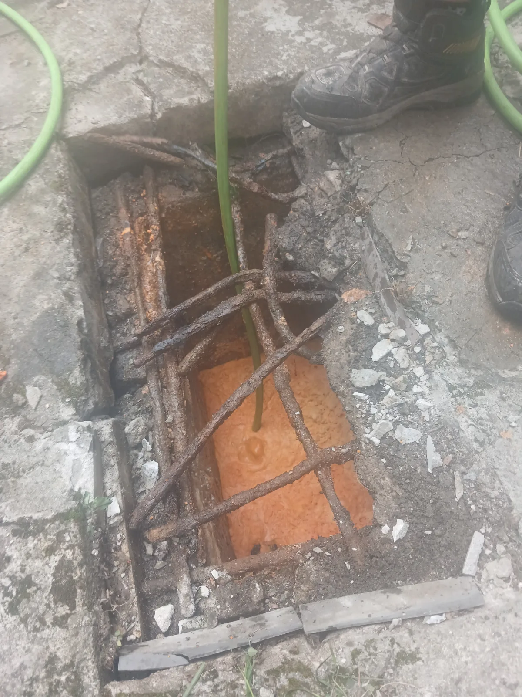
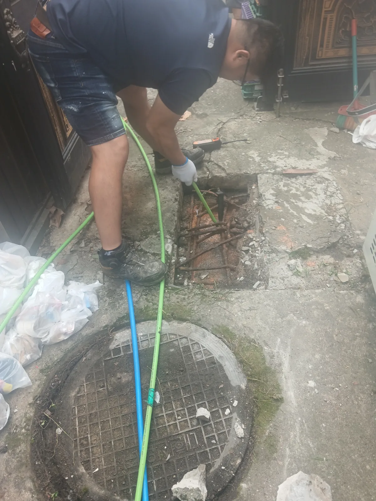

부평구 갈산동 하수구막힘, 현장 도착 후 진단
인천 부평구 갈산동 식당 현장에 도착해 내부 하수구와 외부 배수시설을 함께 점검했습니다. 외부 하수 집수정을 개방해 확인하니 기름과 국물이 섞인 오수가 가득 차 있었고 정상적으로 배출되지 않는 상태였습니다.
식당 하수구는 가정용 배관보다 기름과 음식물 성분의 유입량이 많습니다. 기름은 온도가 내려가면 배관 벽면에 달라붙고, 여기에 음식물 찌꺼기가 겹겹이 쌓이면서 단단한 유지 슬러지를 형성합니다. 단순 관통만으로는 배관 벽면의 기름때가 남을 수 있어 고압세척 작업이 필요했습니다.
1단계: 증상 확인과 필요한 장비 작업
외부 하수 집수정의 수위와 기름층, 배수관 연결 상태를 확인했습니다. 막힘이 발생한 배관 방향을 파악한 뒤 고압세척 호스와 전용 노즐을 투입할 수 있도록 작업 공간을 확보했습니다.

2단계: 원인 구간 처리와 정상 작동 확인
고압세척 호스를 연결 배수관 안쪽으로 진입시키며 강한 수압으로 유지 슬러지와 음식물 찌꺼기를 분쇄하고 씻어냈습니다. 호스를 전진과 후진시키며 배관 벽면까지 반복 세척했고, 집수정에 고여 있던 오수가 빠르게 내려가는 것을 확인했습니다. 이후 충분한 물을 흘려보내 역류 없이 정상적으로 배수되는지 최종 점검했습니다.

작업 결과와 재발 방지 안내
고압세척으로 배수관 내부의 기름때와 음식물 찌꺼기를 제거하면서 집수정 수위가 내려가고 식당 하수구의 배수 기능이 정상적으로 회복됐습니다. 식당 배관은 사용량이 많아 막힌 뒤 작업하는 것보다 주기적인 배관세척과 집수정 청소로 유지 슬러지가 굳는 것을 예방하는 것이 효과적입니다. 기름과 음식물 찌꺼기의 배수구 유입도 최대한 줄여야 합니다. 신라건축설비는 식당 하수구막힘부터 집수정 고압세척까지 늘 당신 곁에서 신속하고 정확하게 해결해드리겠습니다.
최종 조치: 외부 하수 집수정에 가득 차 있던 기름 섞인 오수의 상태를 확인한 뒤 고압세척 호스를 배수관 내부로 진입시켰습니다. 강한 수압으로 배관 벽면에 쌓인 유지분과 음식물 찌꺼기를 세척해 막힘을 제거하고 정상적인 배수 흐름을 복원했습니다.
현장 방문 전 확인하는 비용과 작업 범위
신라건축설비는 현장 증상과 배관 구조를 확인한 뒤 필요한 작업과 예상 비용을 안내합니다. 단순 관통으로 해결되는지, 배관내시경·석션·고압세척 또는 추가 장비가 필요한지는 현장 상태에 따라 달라집니다. 출장비와 야간 작업비, 추가 장비 비용이 발생할 수 있는 경우 작업 전에 먼저 설명하고 동의를 받은 범위에서 진행합니다.
업체를 선택할 때 확인할 사항
무조건적인 ‘0원’ 표현보다 실제 작업 범위, 추가 비용 조건, 사용 장비와 사후 대응 기준을 확인하는 것이 중요합니다. 해결되지 않았을 때의 비용 기준과 작업 후 동일 증상 발생 시 점검 범위를 사전에 문의해두면 불필요한 분쟁을 줄일 수 있습니다.
부평구 하수구막힘 자주 묻는 질문
하수구막힘은 왜 반복되나요?
부평구 갈산동 현장처럼 식당 내부 하수구로 물이 원활하게 빠지지 않고 오수가 다시 올라오는 역류 증상이 발생했습니다. 배수량이 많아질수록 물이 빠지는 속도가 느려져 영업에 지장이 생길 수 있는 상태였습니다. 증상은 원인이 현장마다 다를 수 있습니다. 배관 내부 기름 슬러지·생활 오염물·스케일이 충분히 제거되지 않았거나 오수관·공용배관 구간에 문제가 있으면 반복될 수 있습니다. 재발 시 막힌 위치와 배관 상태를 함께 확인합니다.
하수구가 역류하거나 물이 안 내려가면 하수구뚫는업체를 불러야 하나요?
바닥 배수구가 역류하거나 여러 배수구에서 동시에 물이 빠지지 않으면 단순 배수구 막힘보다 깊은 배관이나 공용배관 문제일 수 있습니다. 전문 장비로 원인 구간을 확인하는 것이 좋습니다.
여러 배수구가 동시에 막히면 공용배관이나 오수관 문제인가요?
동시에 여러 곳에서 배수 불량과 역류가 발생하면 메인배관·오수관·공용배관을 의심할 수 있지만 건물 구조마다 다릅니다. 배관내시경과 현장 진단으로 구간을 구분합니다.
하수구뚫는업체는 어떤 장비로 작업하나요?
현장에 따라 샤프트, 석션, 배관내시경, 고압세척 장비 등을 사용합니다. 단순 관통이 필요한지 배관 내부 세척까지 필요한지는 오염 상태와 막힘 원인에 따라 판단합니다.
하수구 고압세척은 언제 필요한가요?
기름 슬러지나 배관 내부 오염이 넓게 쌓여 반복 막힘이 생기는 경우 고압세척이 효과적일 수 있습니다. 모든 하수구막힘에 고압세척을 적용하는 것은 아니며 먼저 배관 상태를 확인합니다.
하수구막힘 비용은 어떻게 정해지나요?
막힌 위치, 배관 길이와 구경, 공용배관 여부, 내시경·샤프트·고압세척 등 장비 투입 범위에 따라 달라집니다. 추가 작업이 필요한 경우 진행 전에 범위와 비용을 안내합니다.
하수구막힘 서울·경기 출동지역
신라건축설비는 부평구 갈산동 현장을 포함해 서울 25개 구와 경기도 31개 시·군의 배관 문제를 상담합니다. 현장 거리와 기사 배정 상황에 따라 출동 가능 여부를 먼저 안내드립니다.
서울 전 지역
강남구 · 강동구 · 강북구 · 강서구 · 관악구 · 광진구 · 구로구 · 금천구 · 노원구 · 도봉구 · 동대문구 · 동작구 · 마포구 · 서대문구 · 서초구 · 성동구 · 성북구 · 송파구 · 양천구 · 영등포구 · 용산구 · 은평구 · 종로구 · 중구 · 중랑구
경기도 주요 출동지역
수원시 · 용인시 · 고양시 · 화성시 · 성남시 · 부천시 · 남양주시 · 안산시 · 평택시 · 안양시 · 시흥시 · 파주시 · 김포시 · 의정부시 · 광주시 · 하남시 · 광명시 · 군포시 · 양주시 · 오산시 · 이천시 · 안성시 · 구리시 · 의왕시 · 포천시 · 양평군 · 여주시 · 동두천시 · 과천시 · 가평군 · 연천군